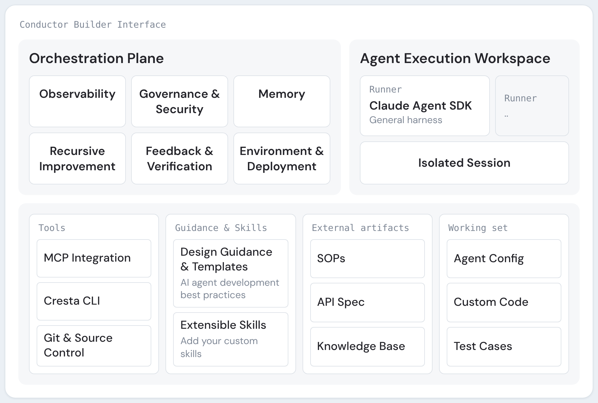
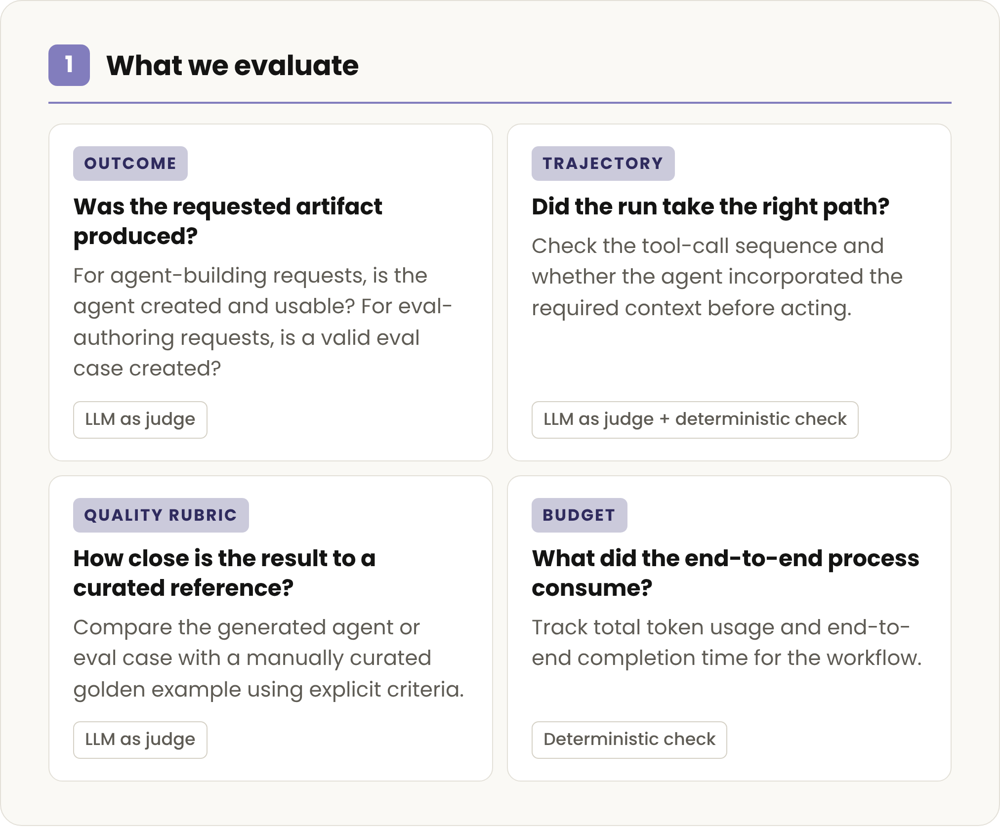
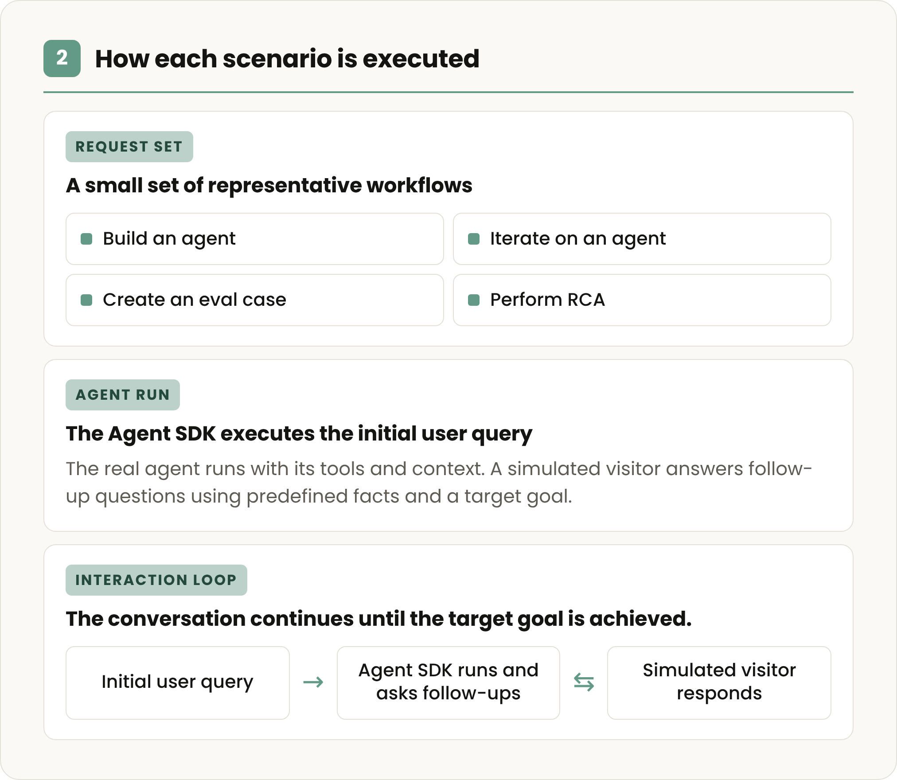
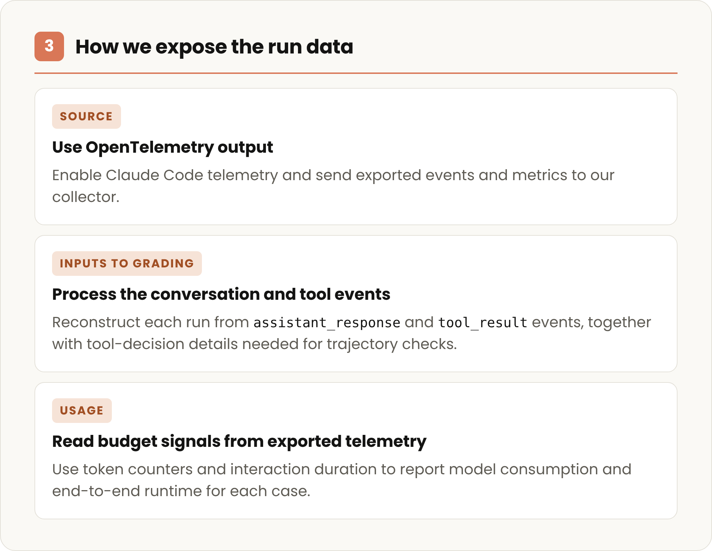

In our series, How startups build with Claude, we look at the decisions behind AI products. Here, we explore how Cresta brought its expertise building AI-native customer experience into Conductor, an agent that helps developers build and improve other agents.
| The quick pitch | |
| Name | Cresta |
| Founded | 2017 |
| CEO | Ping Wu |
| Growth | $270M+ raised. $100M+ ARR. Helping organizations like United Airlines, CVS Health, and Marriott deliver exceptional customer experiences |
Building enterprise AI agents for customer experience use cases requires understanding the context embedded across a wide range of customer interactions. For example, customers may:
- Ask for a refund without saying which purchase they mean,
- Report a billing problem and a login issue in the same message, or
- Request a refund after the return window has closed.
To respond correctly, the agent may need to check what the customer bought, the refund policy, their account history, or the payment status.
Cresta sees these interactions at volume. Its platform powers customer experience, AI agents that handle conversations on their own, provide real-time guidance for the human agents working alongside them, and surface conversation intelligence that shows the business where to improve.
Building and maintaining customer experience agents requires organizations to make key decisions on operating requirements: what the agent needs to know, which systems it must access, and where its behavior should be flexible or deterministic. Cresta wanted to make that judgment available to more teams without each one starting from scratch.
Conductor is the result: a natural language agent builder that helps teams turn complex business context into production-ready agents. Users describe what they want to build, and Conductor guides the work from a grounded blueprint through implementation, evaluation, and optimization.
Cresta originally built an early version of Conductor using Claude Sonnet and Claude Opus to help internal teams support customer deployments. The open question was whether Cresta could turn that system into a product customers could use to build agents directly within the platform. To carry out open-ended development work, Conductor uses the Claude Agent SDK as a general-purpose harness to gather context, use tools, write and run code, and adapt based on the results.
“We used Claude Code internally as a dev tool because it was very effective at the software development aspects of building an agent,” said Renjie Li, Engineering Lead for Cresta Conductor. “The Claude Agent SDK gave us a way to use that same agentic development harness programmatically. With Conductor, we’ve connected it with Cresta’s deep conversation intelligence, CX expertise, evaluations, and runtime to give users the agent-building experience we wish we’d had from day one.”
Cresta reports that in early use cases across Cresta and its partners, Conductor cut initial deployment time roughly in half.

A meta-agent that helps build the next agent
Conductor is a self-improving meta-agent built on established best practices for CX agent development. As teams build and refine more agents with it, they capture their own proven patterns, workflows, and expert judgment. This creates a knowledge flywheel that makes future development faster and more consistent.
After launch, production interactions, workflow outcomes, and feedback become new signals for the next improvement.
Conductor helps builders turn what they learned from an agent build into a reusable memory artifact, capturing patterns, business rules, and evaluation approaches. They can then share it as skill with the rest of the team, so others can build from the same proven practices.
Making the important decisions easier
Writing the first prompt is only one part of building a useful agent. One of the harder calls is where a conversation should stay flexible and where it needs explicit business rules and controlled tool behavior.
"You don't want to go too deterministic, otherwise you create a giant decision tree trying to map out every possible branch… but there are enterprise-critical workflows that you need to make sure work all the time, especially for highly regulated industries with low risk tolerance," said Renjie. "Conductor helps discover and harden those deterministic requirements and the implementation with the flexibility to improve the overall experience."
Conductor draws on historical conversations to help teams identify where a human should stay in the loop and where the model can be given room to adapt. Once those boundaries are set, developers still need to test the deterministic pieces against the requirements they're meant to enforce, and revise those tests as the underlying business rules change.
How Cresta evaluates Conductor
Conductor is measured on how well it builds agents. To that end, Cresta runs Conductor through a set of build tasks:
- Build a new agent
- Write a test case for one
- Change an agent that already exists
- Perform root cause analysis
Finishing the task is not the only bar. The team also looks at the outcomes, how Conductor got there, and what it used along the way.
| Evaluation | Question it answers |
| Outcome | Did Conductor produce the requested, usable artifact? |
| Execution path | Did it use the appropriate tools and required context? |
| Quality | How does the result compare with a curated reference? |
| Resource use | How much time and model usage did the task require? |
Those same tasks function as a safety net. When a new Claude model is launched or the Conductor framework is updated, Cresta reruns its evaluations. It uses the same tasks and same scoring to identify what improved and what still needs work before anyone commits to the change.



That same evaluation discipline is built into Conductor, which allows its users to check and see if their agents are performing as intended. Conductor turns requirements and edge cases captured during the build phases into tests within its evaluation module.
Teams can then monitor the workflows that need to work every time as policies, connected systems, and conversation patterns change. That gives them a practical way to update an agent as the business changes without losing the reliability of the workflows they have already hardened.
Building Conductor on the Claude Agent SDK
Cresta designed Conductor as the CX-specific control plane for agent development. It brings together conversation data, domain expertise, and development practices, then governs each agent run through policy, observability, verification, and feedback-driven improvement.
The Claude Agent SDK sits beneath Conductor as a general-purpose execution harness. It manages the work of gathering context, calling tools, and writing and running code; Conductor layers Cresta's CX workflows, tools, and domain context on top.
The team evaluated the SDK against the work Conductor needed to perform: tasks with multiple steps, substantial context, and repeated tool use. Its review covered data privacy, tenant architecture, organization-level key distribution, controls, and observability across the implementation.
"Anthropic gives us a strong, general-purpose foundation for agentic software development. That lets us put our engineering investment where Cresta creates the most durable customer value," said Xiangru Chen, VP of Engineering at Cresta.
Putting Cresta's engineering expertise directly in customers' hands
Conductor started inside Cresta, helping its own forward-deployed team learn which development tasks could become repeatable, where context mattered most, and what builders needed to inspect along the way. Its success in that internal work gave the team confidence to bring the same capabilities to customers and partners.
For any team whose product deploys custom agents faster than its engineers can hand-build them, Cresta's approach is a useful reference point: with agents or meta-agents, the work after the initial build is often the hardest part.
See how Conductor turns business context into better agent design, implementation, and ongoing improvement.
| Best practices from the Cresta team | |
| Dogfood your products | Conductor ran as an internal tool first, and only became a product once its output matched what an engineer with deep AI expertise would build. |
| Focus on your unique advantages | Cresta drew a hard line between the expertise only they could bring (their conversation data and understanding of customer experience) and what they could take off the shelf from the Agent SDK, and refused to build anything on the wrong side of it. |
| What parts of your agent need to be deterministic | Harden the enterprise-critical workflows that can never go wrong and leave the rest flexible, or you won't end up with the interactive agentic experience you want. |
| Getting to production is the easy part | The initial build is only about 20% of the effort, the other 80% is the testing, optimization, and continuous improvement that follows, so design your tooling around the iteration loop, not the launch. |